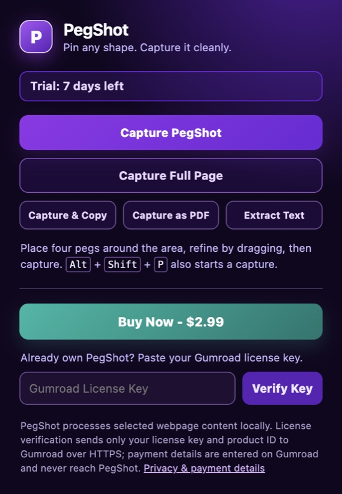
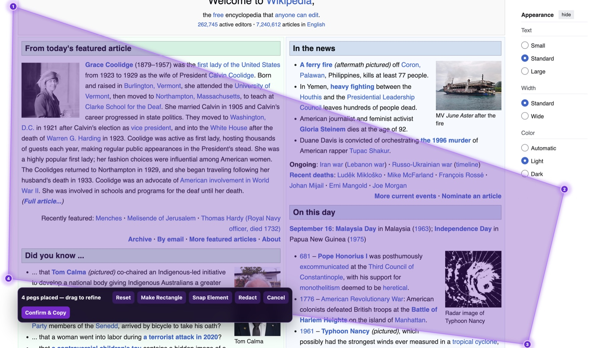
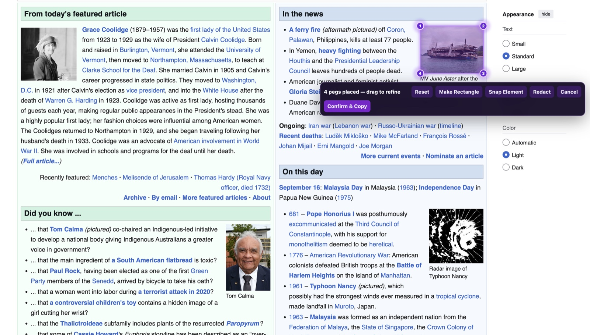
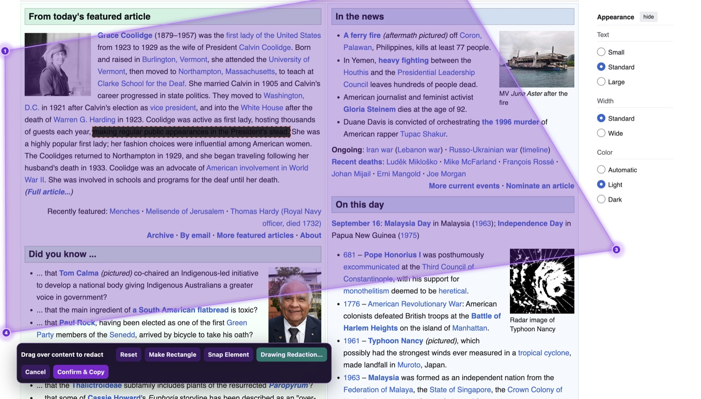
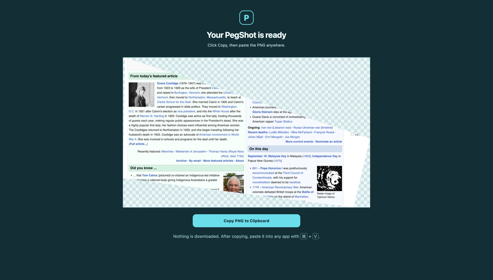
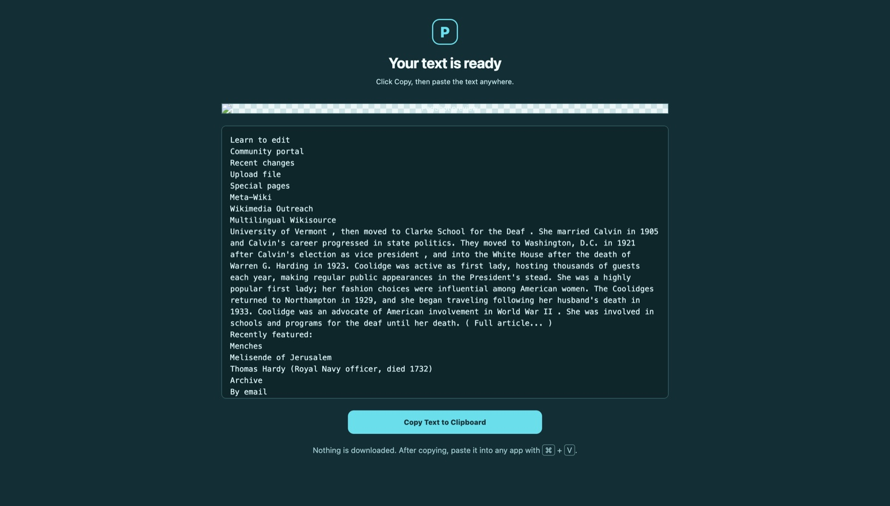

Place four pegs
Click around the part of the page you want. The pins can span content above, below, or beside the viewport.
Precise web capture for Chrome
PegShot lets you draw the exact area you need—even across a long, scrolling page—then copy it, redact it, export it, or pull out the text.

For research, design reviews, support tickets, documentation, and every moment a regular screenshot is too much—or not enough.
How it works
Click around the part of the page you want. The pins can span content above, below, or beside the viewport.
Drag a peg, make a perfect rectangle, snap to an element, or paint over anything that should stay private.
Copy a transparent PNG, export a PDF, capture the whole page, or extract text directly to your clipboard.
Built for the messy web
Start with the exact region you need. PegShot handles the awkward parts—long pages, irregular boundaries, sensitive details, and getting the result into the next app quickly.
01 — Four-peg selection
Place four glowing pegs anywhere on a page to create a custom quadrilateral. Drag them until the boundary fits the content, then capture exactly inside it.

02 — Snap Element
Hover an image, card, table, or other page element and let PegShot snap the pegs to its bounds. It is ideal when the thing you want already has a clear visual boundary.

03 — Redact first
Paint over names, account details, or sensitive lines before you copy or export. Redaction is part of the capture flow, so you do not need another editor just to share safely.


Copy image
Copy your transparent, clipped capture to the clipboard and paste it directly into the tools you already use.

Extract text
Extract text from the selected page region and copy it without downloading a file or retyping it by hand.
Your output, your way
A transparent PNG ready to paste.
A shareable document when images are not enough.
One long screenshot without placing pegs.
Copy text from your selected area.
Built with restraint
PegShot processes selected webpage content, capture images, OCR text, PDFs, and redactions locally in your browser. Your screenshots and extracted text are not sent to the developer, Gumroad, or an analytics service.
Read the privacy & payment terms
Independent software
PegShot is an independently built Chrome extension for people who need a more thoughtful way to capture the web—without a bloated workflow or a generic full-page image.
Follow the developer on GitHubReady when a normal screenshot is not enough
Try every capture mode for seven days, then keep PegShot with a $2.99 Gumroad license.
Get PegShot